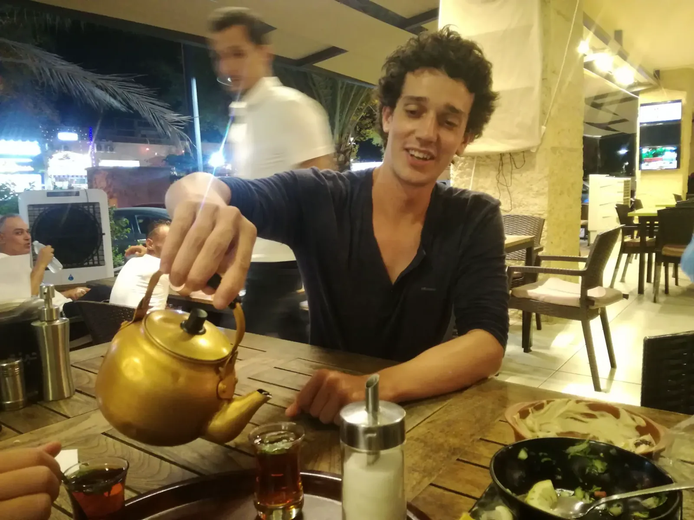

Aqaba, Jordan’s vibrant coastal city, is a paradise for sun-seekers, but for those who know where to look, it is an even greater haven for foodies. Moving beyond the tourist traps and hotel buffets reveals a rich tapestry of authentic Jordanian flavors, hidden in plain sight on the bustling streets. If your travel intent is to truly **eat like a local**, then this guide to the city's best street food is your first step.
This is the real Aqaba, where the aroma of fresh spices and sizzling falafel fills the air. To fully unlock these culinary secrets, consider joining a **local walking tour Aqaba with food tasting**, where a local expert can guide you through the maze of flavors. But for now, here are five must-try local secrets that define the authentic Aqaba street food experience.
1. The King of Shawarma: Al Mohandes Cafeteria
No discussion of Jordanian street food is complete without mentioning **shawarma**, and in Aqaba, **Al Mohandes Cafeteria** is legendary. This local institution is a testament to simple, perfect execution. The meat—whether chicken or lamb—is slow-cooked on a vertical spit, shaved thin, and wrapped in fresh bread with just the right balance of tahini, pickles, and spices.
The secret here is the consistent quality and the speed of service, which ensures every bite is fresh and hot. It is a true local experience, often bustling with residents, making it a perfect spot to observe daily life while enjoying one of the best cheap eats in Aqaba.
2. Manakish Magic: The Charm of Baba Za'atar
For a traditional Jordanian breakfast or a midday snack, the flatbread known as **Manakish** is essential. While many places serve it, the small, charming shops like **Baba Za'atar** elevate it to an art form. Manakish is a baked dough topped with a variety of ingredients, most famously *za'atar* (a blend of thyme, sesame seeds, and sumac) mixed with olive oil.
The simple, earthy flavor of the za'atar, combined with the warmth of the freshly baked bread, is an unforgettable taste of the Levant. Look for the local favorite, *Manakish Jibneh* (cheese manakish), for a creamy, savory treat.
3. A Sensory Journey: The Aqaba Spice Souk
While not a food item itself, the local **Spice Souk** is the heart of Aqaba's culinary identity. This vibrant market is where the magic begins, supplying the ingredients for every authentic Jordanian dish. Walking through the souk is a feast for the senses, with towering piles of fragrant spices like cardamom, turmeric, and sumac.
This is where you can find the unique blends used in traditional cooking, and it is a crucial stop on any **local walking tour Aqaba with food tasting**. Learning about the spices is learning the language of Jordanian cuisine.
4. Coastal Delights: The Fresh Fish Market
As Jordan's only coastal city, Aqaba boasts a unique culinary specialty: Sayadieh. This fragrant fish and rice dish is a local treasure. The best way to appreciate it is to visit the **Fresh Fish Market** early in the morning.
While you won't eat the finished dish here, the market provides a direct connection to the Red Sea's bounty. Seeing the day's catch—from Red Sea bream to grouper—and understanding the freshness of the ingredients is key to appreciating the local cuisine. Many local restaurants and homes, including the kitchen where our cooking classes are held, source their fish directly from here.
5. The Sweet Ending: Kunafa from a Hidden Bakery
After a savory tour of the city, a sweet finish is mandatory. **Kunafa** is a rich, cheesy pastry soaked in a sweet, sugar-based syrup. The best Kunafa is often found in small, unassuming bakeries tucked away on side streets.
The contrast between the crunchy, shredded pastry (kadaif) and the soft, melted cheese, all drenched in a warm, fragrant syrup, is a perfect end to a day of exploration. Ask a local for their favorite spot—it's a secret worth seeking out.

Nothing beats the warmth of traditional mint tea after a day of exploring Aqaba's street food.